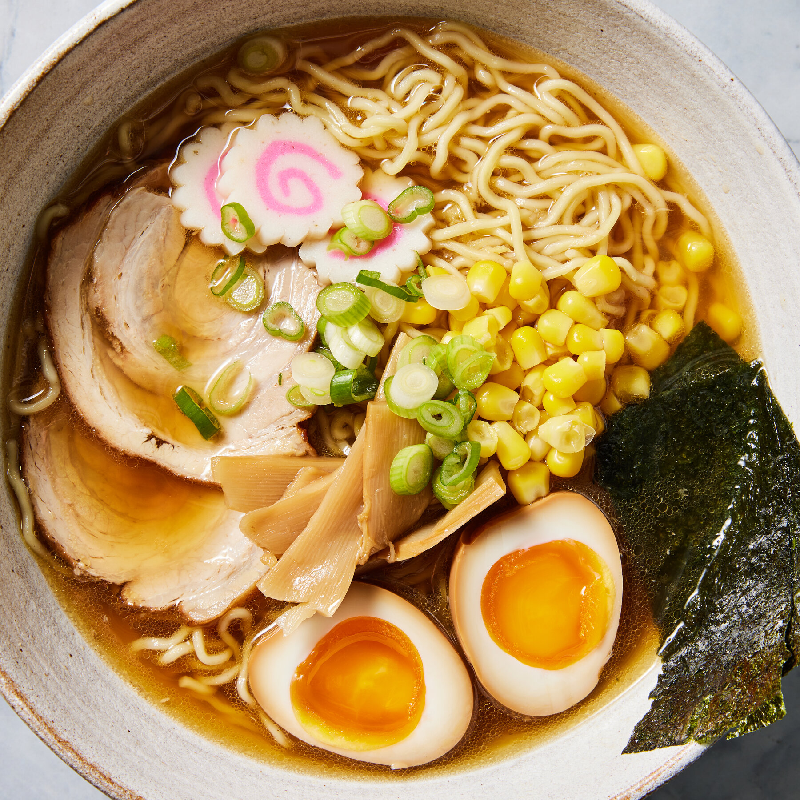

Shoyu Ramen
「醤油ラーメン — The balance between the umami of shoyu and the warmth of the broth."
Shoyu Ramen is the most traditional type from Tokyo. Its clear broth, seasoned with soy sauce (shoyu), has a refined and balanced flavor, with salty and slightly sweet notes. It is a light, aromatic and harmonious ramen.
Ingredients
- Japanese soy sauce (shoyu)
- Chicken or dried fish broth (dashi)
- Thin wheat noodles
- Bamboo shoots, scallion, egg and chashu pork
Flavor
Balanced umami with salty and light notes.
Scent
Delicate, with essence of soy and chicken.
Texture
Soft and light, perfect to enjoy without heaviness.